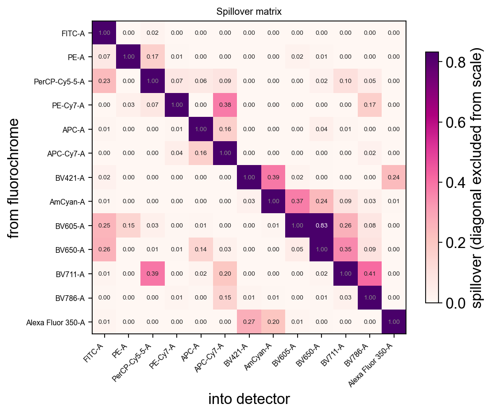
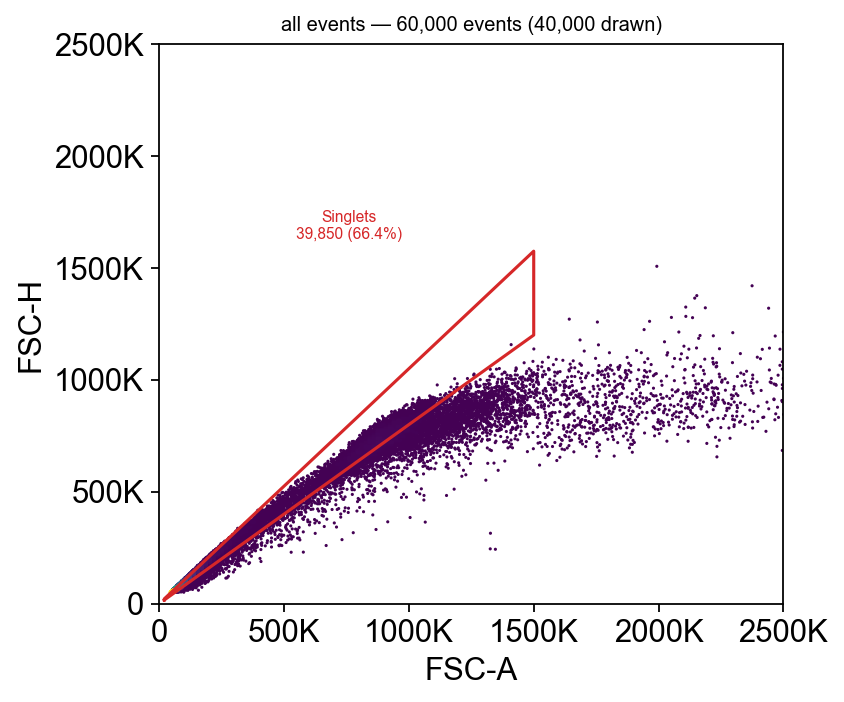

The whole module on real data#
Every other notebook in this series runs on ov.datasets.flow_demo(), which is
simulated — deliberately, because a simulation is the only way to show what
spillover did, and the only way to check a gate against the answer.
This one runs on two real, published, openly-licensed experiments. Nothing here is arranged for convenience, and three things break that never break on simulated data:
the top of scale is not 262,144 — it is whatever the instrument wrote into
$PnR, and it differs between instruments and between channels;the logicle
Wthat looked fine on simulated data crushes the negative population into the axis, because real detector noise is far wider;the populations overlap, so a gate is a judgement call rather than a line between two clean clouds.
The two datasets, and why it takes two#
No openly-licensed cytometry dataset carries a full CD3/CD4/CD8/CD19 hierarchy and a real spillover matrix and the FSC-H a singlet gate needs. Each of these has two of the three, so the notebook uses both and is explicit about which lesson each one supports.
|
|
|
|---|---|---|
Instrument |
BD LSRFortessa (conventional) |
Cytek Aurora (full spectrum) |
Spillover |
real 13×13, uncompensated |
9×9 identity — unmixed at acquisition |
Singlet gate |
✗ no FSC-H |
✓ FSC-A + FSC-H |
B cells |
✗ no CD19 |
✓ CD19 |
Samples |
32 files, identical panel |
6 donors |
Citations — both are CC-BY-4.0 and are downloaded from their original repositories rather than re-hosted:
Kim, Edy (2024). Immunophenotyping of peripheral blood mononuclear cells after out-of-hospital cardiac arrest. Zenodo. 10.5281/zenodo.14311616
Gootjes C, Zwaginga JJ, Nikolic T, Roep BO (2026). Limited efficacy of a therapeutic anti-CD40 monoclonal antibody to inhibit activated CD4 T cell autoimmunity in vitro. PLOS ONE. 10.1371/journal.pone.0351131
The loaders cache into ./data, so the download happens once.
import numpy as np
import pandas as pd
import matplotlib.pyplot as plt
import omicverse as ov
ov.style() # omicverse's plotting defaults
adata = ov.datasets.flow_pbmc_fortessa(n_per_group=2, max_events=25000)
adata
🔬 Starting plot initialization...
🧬 Detecting GPU devices…
✅ Apple Silicon MPS detected
• [MPS] Apple Silicon GPU - Metal Performance Shaders available
____ _ _ __
/ __ \____ ___ (_)___| | / /__ _____________
/ / / / __ `__ \/ / ___/ | / / _ \/ ___/ ___/ _ \
/ /_/ / / / / / / / /__ | |/ / __/ / (__ ) __/
\____/_/ /_/ /_/_/\___/ |___/\___/_/ /____/\___/
🔖 Version: 2.2.4 📚 Tutorials: https://omicverse.readthedocs.io/
✅ plot_set complete.
🔍 Downloading data to ./data/96_Healthy_Anti-Nectin2_Isotype_3.fcs
⚠️ File ./data/96_Healthy_Anti-Nectin2_Isotype_3.fcs already exists
🔍 Downloading data to ./data/97_Healthy_Anti-Nectin2_Isotype_4.fcs
⚠️ File ./data/97_Healthy_Anti-Nectin2_Isotype_4.fcs already exists
🔍 Downloading data to ./data/108_CA_Anti-Nectin2_Isotype_3.fcs
⚠️ File ./data/108_CA_Anti-Nectin2_Isotype_3.fcs already exists
🔍 Downloading data to ./data/110_CA_Anti-Nectin2_Isotype_5.fcs
⚠️ File ./data/110_CA_Anti-Nectin2_Isotype_5.fcs already exists
100,000 events x 16 channels from 4 files
Kim, Edy (2024). Immunophenotyping of peripheral blood mononuclear cells after out-of-hospital cardiac arrest. Zenodo. https://doi.org/10.5281/zenodo.14311616 (CC-BY-4.0)
AnnData object with n_obs × n_vars = 100000 × 16
obs: 'sample', 'group', 'source_file'
var: 'n', 'channel', 'marker', 'PnB', 'PnE', 'PnG', 'PnR'
uns: 'fcs', 'dataset'
The top of scale comes from the file#
ov.flow.Linear(t=262144) is what a BD instrument happens to use. It is not a
constant of nature, and hard-coding it is the first thing that breaks when a
file from another cytometer arrives. read_fcs keeps $PnR — the top of scale
the acquisition software declared — per channel.
adata.var[["channel", "marker", "PnR"]]
channel marker PnR
FSC-A FSC-A 262144.0
SSC-A SSC-A 262144.0
CD3 FITC-A CD3 262144.0
Tim3 PE-A Tim3 262144.0
Nectin2 PerCP-Cy5-5-A Nectin2 262144.0
IL10 PE-Cy7-A IL10 262144.0
IFNg APC-A IFNg 262144.0
TNFa APC-Cy7-A TNFa 262144.0
CD4 BV421-A CD4 262144.0
CD8 AmCyan-A CD8 262144.0
TIGIT BV605-A TIGIT 262144.0
CD14 BV650-A CD14 262144.0
CD16 BV711-A CD16 262144.0
CD56 BV786-A CD56 262144.0
LIVE DEAD Alexa Fluor 350-A LIVE DEAD 262144.0
Time Time 262144.0
# Build the transforms from the file, not from a constant.
T = float(adata.var.loc["FSC-A", "PnR"])
lin = ov.flow.Linear(t=T)
print(f"scatter top of scale from $PnR: {T:,.0f}")
scatter top of scale from $PnR: 262,144
The spillover matrix is real here#
93 of the 156 off-diagonal entries are non-zero and the largest is 0.83 — that is, one detector picks up 83% as much signal from the wrong fluorochrome as from its own. This is why the compensation step exists.
spill = adata.uns["fcs"]["spillover"]
off = spill.to_numpy()[~np.eye(spill.shape[0], dtype=bool)]
print(f"{spill.shape[0]}x{spill.shape[1]} matrix, "
f"{int((off != 0).sum())}/{off.size} off-diagonal terms non-zero, "
f"largest {off.max():.3f}")
ov.flow.spillover_heatmap(adata, figsize=(6.6, 5.4))
None
13x13 matrix, 93/156 off-diagonal terms non-zero, largest 0.832
{kind=link}

Compensating#
compensate uses the file’s own matrix. Keep an uncompensated copy — the
comparison is the whole point, and the operation is refused if run twice.
sp = spill.to_numpy().copy()
np.fill_diagonal(sp, 0.0)
i, j = np.unravel_index(np.argmax(sp), sp.shape)
src_det, dst_det = spill.index[i], spill.columns[j]
det2marker = dict(zip(adata.var["channel"], adata.var.index))
src, dst = det2marker[src_det], det2marker[dst_det]
print(f"worst pair: {src} ({src_det}) spills {sp[i, j]:.1%} into {dst} ({dst_det})")
raw = adata.copy()
ov.flow.compensate(adata)
worst pair: TIGIT (BV605-A) spills 83.2% into CD14 (BV650-A)
AnnData object with n_obs × n_vars = 100000 × 16
obs: 'sample', 'group', 'source_file'
var: 'n', 'channel', 'marker', 'PnB', 'PnE', 'PnG', 'PnR'
uns: 'fcs', 'dataset', 'flow'
layers: 'uncompensated'
The transform has to be fitted to the data#
Before looking at anything, the display scale has to be fitted — and this is the
part a simulated tutorial cannot teach honestly. W sets how wide the logicle’s
linear region is, and the value that looked right on simulated data is far too
narrow for a real detector: real compensated negatives run to tens of thousands
of units below zero, not tens. (Fit it after compensation, since compensation
is what creates most of those negatives.)
There is a published estimator for it.
def auto_w(values, T, M=4.5):
"""The Parks/Moore auto-logicle width.
W = (M - log10(T / |r|)) / 2, with r the 5th percentile of the NEGATIVE
values — i.e. make the linear region just wide enough to hold the noise the
detector actually produced. Published in Parks, Roederer & Moore (2006),
Cytometry A 69:541, the same paper the logicle scale comes from.
"""
negatives = values[values < 0]
if negatives.size < 10:
return 0.5 # nothing below zero: nothing to make room for
r = np.percentile(negatives, 5)
w = (M - np.log10(T / abs(r))) / 2.0
return float(np.clip(w, 0.1, M / 2 - 0.1))
markers = ["CD3", "CD4", "CD8", "CD14", "CD16", "CD56", "LIVE DEAD"]
rows = []
for m in markers:
v = adata[:, m].X.ravel()
Tm = float(adata.var.loc[m, "PnR"])
rows.append({"marker": m, "$PnR": Tm,
"5th pct of negatives": np.percentile(v[v < 0], 5) if (v < 0).any() else np.nan,
"% below zero": (v < 0).mean(),
"W": auto_w(v, Tm)})
widths = pd.DataFrame(rows).set_index("marker")
widths.style.format({"$PnR": "{:,.0f}", "5th pct of negatives": "{:,.0f}",
"% below zero": "{:.1%}", "W": "{:.2f}"})
| $PnR | 5th pct of negatives | % below zero | W | |
|---|---|---|---|---|
| marker | ||||
| CD3 | 262,144 | -5,594 | 46.7% | 1.41 |
| CD4 | 262,144 | -155 | 28.3% | 0.64 |
| CD8 | 262,144 | -511 | 7.2% | 0.89 |
| CD14 | 262,144 | -4,288 | 78.0% | 1.36 |
| CD16 | 262,144 | -102 | 28.6% | 0.55 |
| CD56 | 262,144 | -118 | 34.3% | 0.58 |
| LIVE DEAD | 262,144 | -122 | 29.3% | 0.58 |
tr = {m: ov.flow.Logicle(t=float(adata.var.loc[m, "PnR"]), m=4.5,
w=widths.loc[m, "W"], a=0.0)
for m in markers}
# What the simulated notebooks used, for comparison.
lg_rough = ov.flow.Logicle(t=T, m=4.5, w=1.0, a=0.0)
fig, axes = plt.subplots(1, 2, figsize=(10, 2.9))
ov.flow.histogram(adata, "CD3", transforms={"CD3": lg_rough}, ax=axes[0],
title="W = 1.0 (the simulated default)")
ov.flow.histogram(adata, "CD3", transforms={"CD3": tr["CD3"]}, ax=axes[1],
title=f"W = {widths.loc['CD3', 'W']:.2f} (fitted)")
plt.tight_layout()
{kind=link}
Now the before-and-after is readable#
The same pair, on the fitted scale. Uncompensated, {src} leaking into the
{dst} detector produces the classic diagonal smear — every {src}-bright event
looks slightly {dst}-positive in proportion to how bright it is.
Compensated, the smear is gone. What replaces it is a fan of negative values, and that is not an error: subtracting 83% of one detector from another pushes dim events well below zero. It is the price of a correction that large, and it is the reason the axis has to be biexponential.
fig, axes = plt.subplots(1, 2, figsize=(9.6, 4.3))
pair_tr = {src: tr[src] if src in tr else ov.flow.Logicle(
t=float(adata.var.loc[src, "PnR"]), m=4.5,
w=auto_w(adata[:, src].X.ravel(), float(adata.var.loc[src, "PnR"])), a=0.0),
dst: tr[dst] if dst in tr else ov.flow.Logicle(
t=float(adata.var.loc[dst, "PnR"]), m=4.5,
w=auto_w(adata[:, dst].X.ravel(), float(adata.var.loc[dst, "PnR"])), a=0.0)}
for ax, sample, title in ((axes[0], raw, "uncompensated"),
(axes[1], adata, "compensated")):
ov.flow.biaxial(sample, src, dst, transforms=pair_tr, ax=ax,
title=title, max_events=40000)
plt.tight_layout()
{kind=link}
The negative population is a population. At the default width it is a spike against the axis; fitted, it is a distribution you can put a threshold next to.
The gating strategy#
Scatter, then viability, then lineage. Thresholds are written as data values and
converted with at(), never as the scale-space numbers they happen to equal.
def at(marker, value):
"""A data value expressed on that marker's own scale."""
return float(tr[marker].apply(np.array([float(value)]))[0])
def scat(value):
return float(lin.apply(np.array([float(value)]))[0])
cells_gate = ov.flow.PolygonGate(
name="Cells", dims=("FSC-A", "SSC-A"),
transforms={"FSC-A": lin, "SSC-A": lin},
vertices=np.array([[scat(28000), scat(2000)], [scat(28000), scat(72000)],
[scat(95000), scat(130000)], [scat(165000), scat(130000)],
[scat(165000), scat(30000)], [scat(80000), scat(2000)]]))
live = ov.flow.RectangleGate(
name="Live", dims=("LIVE DEAD",), transforms={"LIVE DEAD": tr["LIVE DEAD"]},
bounds=((None, at("LIVE DEAD", 400)),))
cd3 = ov.flow.RectangleGate(
name="T cells", dims=("CD3",), transforms={"CD3": tr["CD3"]},
bounds=((at("CD3", 400), None),))
quad = ov.flow.QuadrantGate(
name="CD4/CD8", dims=("CD4", "CD8"),
transforms={"CD4": tr["CD4"], "CD8": tr["CD8"]},
dividers=(at("CD4", 120), at("CD8", 250)),
quadrant_names=("DN T", "CD4 T", "CD8 T", "DP T"))
not_t = ov.flow.RectangleGate(
name="CD3-", dims=("CD3",), transforms={"CD3": tr["CD3"]},
bounds=((None, at("CD3", 400)),))
nk = ov.flow.RectangleGate(
name="NK", dims=("CD56",), transforms={"CD56": tr["CD56"]},
bounds=((at("CD56", 300), None),))
mono = ov.flow.RectangleGate(
name="Monocytes", dims=("CD14",), transforms={"CD14": tr["CD14"]},
bounds=((at("CD14", 800), None),))
gs = ov.flow.GatingStrategy("PBMC immunophenotyping")
gs.add_gate(cells_gate)
gs.add_gate(live, parent="Cells")
gs.add_gate(cd3, parent="Live")
gs.add_gate(quad, parent="T cells")
gs.add_gate(not_t, parent="Live")
gs.add_gate(nk, parent="CD3-")
gs.add_gate(mono, parent="CD3-")
print(gs.tree())
root
└ Cells
└ Live
└ T cells
└ CD4/CD8
└ DN T
└ CD4 T
└ CD8 T
└ DP T
└ CD3-
└ NK
└ Monocytes
res = gs.apply(adata)
res.stats()
population parent count parent_count freq_parent freq_total low_n
0 CD3- Live 18946 55716 0.340046 0.18946 False
1 CD4 T T cells 11531 36770 0.313598 0.11531 False
2 CD4/CD8 T cells 36770 36770 1.000000 0.36770 False
3 CD8 T T cells 10489 36770 0.285260 0.10489 False
4 Cells root 56321 100000 0.563210 0.56321 False
5 DN T T cells 14682 36770 0.399293 0.14682 False
6 DP T T cells 68 36770 0.001849 0.00068 True
7 Live Cells 55716 56321 0.989258 0.55716 False
8 Monocytes CD3- 748 18946 0.039481 0.00748 False
9 NK CD3- 2681 18946 0.141507 0.02681 False
10 T cells Live 36770 55716 0.659954 0.36770 False
# What did the viability gate actually remove? On a fresh sample the
# answer can be "almost nothing", and that is worth stating rather than
# implying the gate did work it did not do.
removed = int(res.masks["Cells"].sum() - res.masks["Live"].sum())
print(f"viability gate removed {removed:,} of {int(res.masks['Cells'].sum()):,} "
f"events ({removed / res.masks['Cells'].sum():.1%})")
viability gate removed 605 of 56,321 events (1.1%)
Two things in that table are worth stopping on.
low_n is doing its job on DP T — a frequency quoted off a few dozen events
is not a measurement, and the column says so rather than leaving the reader to
notice.
And DN T is about 40% of T cells, where healthy peripheral blood is
1–5%. That is not a rounding error, it is a factor of ten, and it is the first
thing a reviewer would ask about. Hold onto it; the batch section below explains
it, and the explanation is not “move the gate”.
Seeing it#
fig, axes = plt.subplots(1, 4, figsize=(17.5, 4.0))
ov.flow.biaxial(adata, "FSC-A", "SSC-A", gates=[cells_gate], result=res,
ax=axes[0], max_events=40000)
ov.flow.histogram(adata, "LIVE DEAD", gates=[live], result=res,
transforms={"LIVE DEAD": tr["LIVE DEAD"]},
populations=["Cells"], ax=axes[1])
ov.flow.biaxial(adata, "CD3", "SSC-A", gates=[cd3],
transforms={"CD3": tr["CD3"], "SSC-A": lin},
result=res, population="Live", ax=axes[2], max_events=40000)
ov.flow.biaxial(adata, "CD4", "CD8", gates=[quad], result=res,
population="T cells", ax=axes[3], max_events=40000)
plt.tight_layout()
{kind=link}
This is what real data looks like: the CD4 and CD8 arms are there and they are separable, but they are not the two tidy islands a simulation produces. The CD4 arm in particular sits low — that is the panel, not the gate.
Back-gating: is the NK gate finding NK cells?#
CD56 is expressed on some T cells too, so a CD56 threshold under a CD3-negative parent should land in the lymphocyte scatter region. If it did not, the gate would be picking up debris.
fig, axes = plt.subplots(1, 2, figsize=(9.4, 4.3))
ov.flow.backgate(adata, "FSC-A", "SSC-A", result=res, population="NK",
parent="Cells", transforms={"FSC-A": lin, "SSC-A": lin},
ax=axes[0])
ov.flow.backgate(adata, "FSC-A", "SSC-A", result=res, population="Monocytes",
parent="Cells", transforms={"FSC-A": lin, "SSC-A": lin},
ax=axes[1])
plt.tight_layout()
{kind=link}
Monocytes land high on both scatter axes and NK cells in the lymphocyte cloud — which is what those populations are, and is the check that the thresholds are on real biology rather than on noise.
The hierarchy#
ov.flow.hierarchy(gs, result=res, figsize=(10, 5.5))
None
{kind=link}
One strategy, the whole batch#
The reason the strategy is an object. Four files — two healthy donors, two after out-of-hospital cardiac arrest — through the same gates.
rows = {}
for sample in adata.obs["sample"].cat.categories:
sub = adata[adata.obs["sample"] == sample].copy()
r = gs.apply(sub, write_obs=False)
rows[sample] = r.stats().set_index("population")["freq_parent"]
freqs = pd.concat(rows, axis=1)
freqs.style.format("{:.1%}")
| 108_CardiacArrest | 110_CardiacArrest | 96_Healthy | 97_Healthy | |
|---|---|---|---|---|
| population | ||||
| CD3- | 47.9% | 45.7% | 33.0% | 23.3% |
| CD4 T | 41.7% | 46.6% | 64.7% | 0.0% |
| CD4/CD8 | 100.0% | 100.0% | 100.0% | 100.0% |
| CD8 T | 36.7% | 35.8% | 29.6% | 22.9% |
| Cells | 33.3% | 43.5% | 65.4% | 83.1% |
| DN T | 21.5% | 17.1% | 5.3% | 77.0% |
| DP T | 0.1% | 0.5% | 0.3% | 0.0% |
| Live | 96.0% | 98.6% | 99.8% | 99.5% |
| Monocytes | 7.6% | 0.6% | 7.1% | 1.0% |
| NK | 8.6% | 19.7% | 17.7% | 8.9% |
| T cells | 52.1% | 54.3% | 67.0% | 76.7% |
order = ["Cells", "Live", "T cells", "CD4 T", "CD8 T", "NK", "Monocytes"]
groups = dict(zip(adata.obs["sample"], adata.obs["group"]))
fig, ax = plt.subplots(figsize=(8.8, 3.2))
x, w = np.arange(len(order)), 0.2
for i, s in enumerate(freqs.columns):
ax.bar(x + (i - 1.5) * w, freqs.loc[order, s], w,
label=f"{s} ({groups[s]})")
ax.set_xticks(x, labels=order, rotation=25, ha="right")
ax.set_ylabel("frequency of parent")
ax.legend(fontsize=7, frameon=False)
ax.set_title("one gating strategy, four real samples", fontsize=9)
plt.tight_layout()
{kind=link}
And there is the 40%#
Look along the DN T row rather than at the pooled number.
dn = freqs.loc["DN T"].sort_values()
pd.DataFrame({"DN T (% of T cells)": dn.map("{:.1%}".format),
"group": [groups[s] for s in dn.index]})
DN T (% of T cells) group
96_Healthy 5.3% Healthy
110_CardiacArrest 17.1% CardiacArrest
108_CardiacArrest 21.5% CardiacArrest
97_Healthy 77.0% Healthy
One sample is not like the others. The pooled 40% was never a property of the biology — it is one file with 78% double-negative T cells dragging an average that also contains a sample at 5%, which is exactly the healthy figure.
The likely cause is a failed or weak CD4/CD8 stain in that one tube, and the useful response is to go back to the acquisition and find out — not to move the divider until the average looks respectable. This tutorial does not silently drop the sample, because a reader who only ever sees clean data learns nothing about what to do with dirty data.
It is also the argument for the whole design of GatingStrategy. The same gates
ran on four files independently; had they been applied to the pooled matrix and
reported once, the failure would have been invisible.
With two donors per group the rest of this is a demonstration of the mechanism,
not a result — four samples cannot support a claim about cardiac arrest. The
dataset has 32 files if you want to go further: n_per_group up to 3 here, and
the full record on Zenodo.
Saving the strategy#
Everything above is a portable object. Written to Gating-ML 2.0, it opens in FlowJo, Cytobank or flowCore.
ov.flow.write_gatingml(gs, "pbmc_strategy.xml")
back = ov.flow.read_gatingml("pbmc_strategy.xml")
check = back.apply(adata.copy(), write_obs=False)
print(f"{len(back)} gates read back")
print("every population identical after the round trip:",
all(np.array_equal(res.masks[k], check.masks[k]) for k in res.masks))
7 gates read back
every population identical after the round trip: True
FlowSOM on the gated T cells#
Clustering after gating, which is the order that works: the dead cells and the debris are already gone, so the metaclusters are phenotypes rather than artefacts.
t_cells = adata[res.masks["T cells"]].copy()
t_cells.layers["logicle"] = np.column_stack(
[tr[m].apply(t_cells[:, m].X.ravel()) if m in tr
else lin.apply(t_cells[:, m].X.ravel())
for m in t_cells.var.index])
ov.flow.flowsom(t_cells, n_clusters=6, grid=(8, 8), n_epochs=12,
layer="logicle", markers=["CD4", "CD8", "CD56", "CD16"],
random_state=0)
ov.flow.flowsom_heatmap(t_cells, layer="logicle",
markers=["CD4", "CD8", "CD56", "CD16"],
figsize=(5.6, 3.6))
None
{kind=link}
# Do the metaclusters agree with the gates that were drawn by hand?
pd.crosstab(t_cells.obs["flowsom"],
pd.Series(np.where(res.masks["CD4 T"][res.masks["T cells"]], "CD4 T",
np.where(res.masks["CD8 T"][res.masks["T cells"]], "CD8 T",
"other")), index=t_cells.obs_names, name="gate"))
gate CD4 T CD8 T other
flowsom
0 3396 2 964
1 0 8665 24
2 140 881 811
3 0 760 8
4 7995 0 10
5 0 181 12933
What this dataset cannot do#
No CD19, so B cells are only “not everything else”. No FSC-H, so no doublet discrimination at all — every count above includes whatever doublets the sample contained, and there is nothing in the file that could exclude them.
That is not a flaw in the analysis; it is a limit of the acquisition, and the honest thing is to say so rather than to draw a singlet gate on axes that cannot support one. The second dataset can.
spectral = ov.datasets.flow_pbmc_spectral(n_donors=1, max_events=60000)
spectral.var[["channel", "marker", "PnR"]]
⚠️ File ./data/pone.0351131.s002.zip already exists
60,000 events x 16 channels from 1 donor(s)
Gootjes C, Zwaginga JJ, Nikolic T, Roep BO (2026). Limited efficacy of a therapeutic anti-CD40 monoclonal antibody to inhibit activated CD4 T cell autoimmunity in vitro. PLOS ONE. https://doi.org/10.1371/journal.pone.0351131 (CC-BY-4.0)
channel marker PnR
Time Time 2293297.0
SSC-H SSC-H 4194304.0
SSC-A SSC-A 4194304.0
FSC-H FSC-H 4194304.0
FSC-A FSC-A 4194304.0
SSC-B-H SSC-B-H 4194304.0
SSC-B-A SSC-B-A 4194304.0
CD56 BV510-A CD56 4194304.0
CD15 BV605-A CD15 4194304.0
CD4 BV650-A CD4 4194304.0
CD14 Alexa Fluor 488-A CD14 4194304.0
CD19 PE-A CD19 4194304.0
CD8 PE-Dazzle594-A CD8 4194304.0
CD16 PE-Cy7-A CD16 4194304.0
CD40 APC-A CD40 4194304.0
CD3 APC-Cy7-A CD3 4194304.0
Note $PnR again: this instrument runs to 2,293,297 and 4,194,304
depending on the channel, not 262,144. A transform built from a hard-coded top
of scale would put every event in the wrong place.
Ts = float(spectral.var.loc["FSC-A", "PnR"])
lin_s = ov.flow.Linear(t=Ts)
print(f"{Ts:,.0f} vs the BD instrument's {T:,.0f}")
# A singlet gate is a band around FSC-H / FSC-A ~ 1. Read the band off the data
# rather than guessing at vertices: a doublet has the same pulse area spread
# over a longer time, so its height-to-area ratio drops.
A = spectral[:, "FSC-A"].X.ravel()
H = spectral[:, "FSC-H"].X.ravel()
ratio = H / np.maximum(A, 1)
print("FSC-H / FSC-A: " + ", ".join(
f"p{p}={np.percentile(ratio, p):.2f}" for p in (5, 25, 50, 75, 95)))
lo, hi, a0, a1 = 0.80, 1.05, 20_000.0, 1_500_000.0
def sc(v):
return float(lin_s.apply(np.array([float(v)]))[0])
singlets = ov.flow.PolygonGate(
name="Singlets", dims=("FSC-A", "FSC-H"),
transforms={"FSC-A": lin_s, "FSC-H": lin_s},
vertices=np.array([[sc(a0), sc(lo * a0)], [sc(a1), sc(lo * a1)],
[sc(a1), sc(hi * a1)], [sc(a0), sc(hi * a0)]]))
gs_s = ov.flow.GatingStrategy("spectral").add_gate(singlets)
res_s = gs_s.apply(spectral, write_obs=False)
ov.flow.biaxial(spectral, "FSC-A", "FSC-H", gates=[singlets], result=res_s,
figsize=(5.0, 4.6), max_events=40000,
xlim=(0, sc(2_500_000)), ylim=(0, sc(2_500_000)))
None
4,194,304 vs the BD instrument's 262,144
FSC-H / FSC-A: p5=0.65, p25=0.83, p50=0.97, p75=1.03, p95=1.08
{kind=link}

The doublets are the events below the diagonal — same pulse area, less height — and this is the plot that removes them. Note the axes are zoomed: FSC-A runs to 4.2 million on this instrument and the population occupies the bottom sixth of it, so the default full-scale view would show a dot in the corner.
The Fortessa dataset has no FSC-H channel at all, so this gate is simply unavailable there — every count in the first half of this notebook includes whatever doublets those tubes contained.
And its spillover is the identity#
A full-spectrum instrument unmixes at acquisition. The $SPILLOVER keyword is
present and is the identity matrix, so there is nothing to compensate — running
compensate() here would be a ritual, not a correction.
sp_s = spectral.uns["fcs"]["spillover"]
print(f"{sp_s.shape[0]}x{sp_s.shape[1]}, identity:",
np.allclose(sp_s.to_numpy(), np.eye(sp_s.shape[0]), atol=1e-5))
print(f"largest off-diagonal term: "
f"{np.abs(sp_s.to_numpy() - np.eye(sp_s.shape[0])).max():.2g}")
9x9, identity: True
largest off-diagonal term: 1e-06
The full lineage panel#
CD19 is here, so the B-cell arm is a gate rather than an inference.
markers_s = ["CD3", "CD4", "CD8", "CD19", "CD14", "CD16", "CD56"]
tr_s = {m: ov.flow.Logicle(t=float(spectral.var.loc[m, "PnR"]), m=4.5,
w=auto_w(spectral[:, m].X.ravel(),
float(spectral.var.loc[m, "PnR"])), a=0.0)
for m in markers_s}
fig, axes = plt.subplots(1, 3, figsize=(14, 4.2))
for ax, (a_, b_) in zip(axes, [("CD3", "CD19"), ("CD4", "CD8"), ("CD3", "CD56")]):
ov.flow.biaxial(spectral, a_, b_, transforms={a_: tr_s[a_], b_: tr_s[b_]},
ax=ax, max_events=40000)
plt.tight_layout()
{kind=link}
Summary#
Notebook |
Data |
What it can teach |
|---|---|---|
simulated |
the mechanics, and checking a gate against the answer |
|
05 |
real |
what the file actually contains, and what it does not |
Three things this notebook could show and the simulated ones could not:
$PnR, not 262144. Two instruments, three different tops of scale, one of them per-channel. A hard-codedtis a bug waiting for the next file.Wis fitted, not chosen. Real detector noise is orders of magnitude wider than a simulation’s, and the published estimator is four lines.Some questions the data cannot answer. No FSC-H means no doublet gate, and the right response is to say so — not to draw one anyway.
And one thing that only shows up when you actually look: a pooled frequency can be a fiction. 40% double-negative T cells across four files turned out to be one file at 78% and another at 5%. Gating each sample separately is what made that visible, and no amount of gate-tweaking would have fixed it — because there was nothing wrong with the gate.
Both datasets are CC-BY-4.0 and were downloaded from their original repositories; if you publish anything derived from them, cite the sources at the top of this notebook.